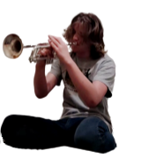
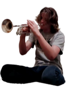

contact: contact@luphoria.com or [matrix] @trent:gra.im (EN/ES please!)
hi! my name is Trent. i'm a computer programmer/developer and musician!
my main interests in computers are linux, web development, p2p/federation/decentralization, and AI - especially FOSS.
i'm fluent in JS/TS, HTML5/CSS, as well as Go, Ada, Bash, Python, and others.
musically, i do a few things! i am a producer, performer, and consumer.
i like writing music - generally in rock, mariachi, electronic, jazz styles.
i like performing. i sing, and often play the trumpet, piano, and guitar!
i listen to a whole lot of music, from genres ranging between traditional Siberian to experimental EDM :)
one of my major interests within music is xenharmony, i.e. tuning systems other than 12 equal divisions of the octave. i <3 microtonality!
 

projects
graim: moderate a community that is on both [matrix] and Discord
i'm a part of Mercury Workshop and TitaniumNetwork!
you can find lots of other projects i've worked on, in my GitHub.
<!-- TODO: music projects here! ;) -->